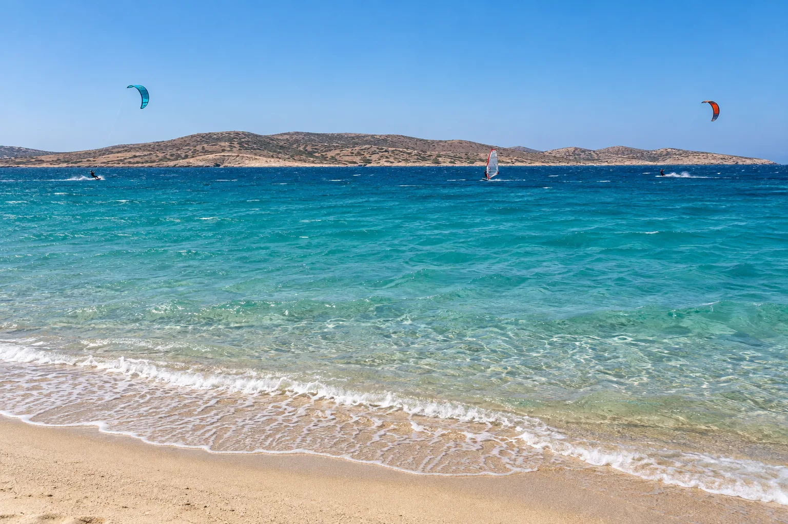

Pounta
Paros, Grèce · kitesurf, windsurf

Chenal entre Paros et Antiparos balayé par le meltem, le vent d’été des Cyclades. Un spot de référence de la Coupe du monde de freestyle.
- Lieu
- Paros, Grèce
- Niveau
- Intermédiaire
- Activités
- kitesurf, windsurf
- Type d'eau
- Mer / océan
- Coordonnées
- 37.02, 25.11 (position approximative du secteur)
Dangers à connaître
- Meltem soutenu et rafaleux.
- Passage de ferries dans le chenal.
Le conseil d'Ocean Buddy
Le meltem souffle fort en juillet-août : choisis une aile adaptée et navigue avec l’école locale.
Ouvrir dans Ocean Buddy Télécharger sur l'App Store
Source : Fiche Ocean Buddy · septembre 2026 · à vérifier localement.